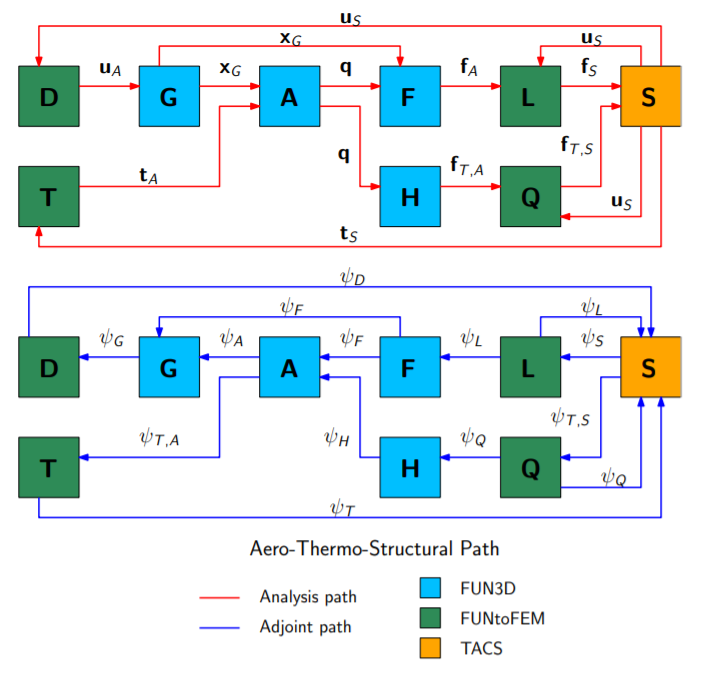

Aerothermal Framework
The residuals for the aerodynamic governing equations are obtained using a discrete approximation of the following integral over each finite volume
\[{A}\left({x}, {q}, {\dot{q}}, {x}_G, {\dot{x}}_G, {t}_{A}, t\right) \triangleq \dfrac{\partial \left( V {q} \right)} {\partial t} + \oint_{\partial V} \left( {\overline{\overline{F}}}^* - {\overline{\overline{F}}_v} \right) \cdot { \hat{n}} dS = 0\]
An interface has been added to FUN3D for aerothermoelastic analysis using the FUNtoFEM framework. This interface provides routines for both force and heat flux integration, as well as the terms needed for the adjoint equations. Furthermore, the interface adds the required multidisciplinary components to the right-hand-side of the aerodynamic adjoint equations. The force integration is a function of the aerodynamic state variables and the node locations and constitutes a system of residuals written as
\[{F} \left( {x}, {x}_G, {q}, {f}_A \right) \triangleq {\phi} \left( {x}, {x}_G, {q} \right) - {f}_A = 0\]
The heat flux integration is also a function of the aerodynamic state variables and node locations and is written as
\[{H} \left( {x}, {x}_G, {q}, {f}_{T,A} \right) \triangleq {\varphi} \left( {x}, {x}_G, {q} \right) - {f}_{T,A} = 0\]
Aerothermal Adjoint
The Lagrangian for the aerothermal problem is formed by summing the function of interest with the products of the residuals for each analysis component combined with their corresponding adjoint, giving the following expression
\[\begin{split} \mathbf{\mathcal{L}}_{AT} \triangleq \; & f(\mathbf{x},\mathbf{q},\mathbf{t}_{A},\mathbf{f}_{T,A},\mathbf{f}_{T,S},\mathbf{t}_{S})
+ \mathbf{\psi}_{A}^{T} \mathbf{A}(\mathbf{x},\mathbf{q},{t}_{A})
+ \mathbf{\psi}_{H}^{T} \mathbf{H}(\mathbf{x},\mathbf{t}_{A},\mathbf{q},\mathbf{f}_{T,A})
+ \mathbf{\psi}_{Q}^{T} \mathbf{Q}(\mathbf{f}_{T,A},\mathbf{f}_{T,S})\\
& + \mathbf{\psi}_{T,S}^{T} \mathbf{S}(\mathbf{x},\mathbf{t}_{S},\mathbf{f}_{T,S})
+ \mathbf{\psi}_{T}^{T} \mathbf{T}(\mathbf{t}_{S},{t}_{A})\end{split}\]
The adjoint equations are obtained by taking the derivative of the Lagrangian with respect to the state variables and setting it to zero. This results in the following coupled system of equations
\[\begin{split}\begin{bmatrix}
\frac{\partial \mathbf{A}}{\partial \mathbf{q}}^{T} &
\frac{\partial \mathbf{H}}{\partial \mathbf{q}}^{T} & 0 & 0 & 0\\
%
0 & \frac{\partial \mathbf{H}}{\partial \mathbf{f}_{T,A}}^{T} &
\frac{\partial \mathbf{Q}}{\partial \mathbf{f}_{T,A}}^{T} & 0 & 0 \\
%
0 & 0 & \frac{\partial \mathbf{Q}}{\partial \mathbf{f}_{T,S}}^{T} &
\frac{\partial \mathbf{S}}{\partial \mathbf{f}_{T,S}}^{T} & 0 \\
%
0 & 0 & 0 & \frac{\partial \mathbf{S}}{\partial \mathbf{t}_{S}}^{T} &
\frac{\partial \mathbf{T}}{\partial \mathbf{t}_{S}}^{T} \\
%
\frac{\partial \mathbf{A}}{\partial \mathbf{t}_{A}}^{T} & 0 & 0 & 0 &
\frac{\partial \mathbf{T}}{\partial \mathbf{t}_{A}}^{T} \\
%
\end{bmatrix}
\begin{bmatrix}
\mathbf{\psi}_{A} \\
\mathbf{\psi}_{H} \\
\mathbf{\psi}_{Q} \\
\mathbf{\psi}_{T,S} \\
\mathbf{\psi}_{T}
\end{bmatrix}
= -
\begin{bmatrix}
\frac{\partial f}{\partial \mathbf{q}}^{T} \\
\frac{\partial f}{\partial \mathbf{f}_{T,A}}^{T} \\
\frac{\partial f}{\partial \mathbf{f}_{T,S}}^{T} \\
\frac{\partial f}{\partial \mathbf{t}_{S}}^{T} \\
\frac{\partial f}{\partial \mathbf{t}_{A}}^{T} \\
\end{bmatrix}\end{split}\]
Aerothermoelastic Framework

The surface displacements are computed by solving the displacement transfer residuals and preserving rigid-body motion. The displacement transfer scheme is given by:
\[{D}({x}, {u}_{S}, {u}_{A}) \triangleq {\xi}({x}, {u}_{S}) - {u}_{A} = 0\]
To obtain a consistent and conservative load transfer, the load transfer is derived based on the method of virtual work. The residual of the load transfer scheme is:
\[{L}({x}, {u}_{S}, {f}_{A}, {f}_{S}) \triangleq {\eta}({x}, {u}_{S}, {f}_{A}) - {f}_{S} = 0\]
MELDThermal links each aerodynamic surface node, where a wall temperature will be specified, to a fixed number of the nearest structural nodes from which the structural temperature will be interpolated. This approach is analogous to the localization property of MELD such that each aerodynamic surface node receives temperature information from a limited number of structural nodes. The temperature of the aerodynamic surface node is then computed from the temperatures of the set of linked structural nodes:
\[T_{A} = \sum_{i=1}^{N} w_{i} {T_{S}}_{i}\]
The weights are computed based on the Euclidean distance between the aerodynamic node and the corresponding structural surface nodes:
\[w_{i} = e^{- \beta d_{i}^2} \Bigg/ \sum_{j=1}^{N} e^{- \beta d_{j}^2}\]
The interpolation is repeated for all aerodynamic surface nodes, giving the temperature transfer residual:
\[{T}({t}_{S}, {t}_{A}) \triangleq {W} {t}_{S} - {t}_{A} = 0,\]
The relationship between the area-weighted heat flux at the aerodynamic surface nodes and the resulting heat flux on the structural nodes is calculated in the same manner as the loads. Based on virtual work, the flux produced at a structural node by the force at an aerodynamic surface node is:
\[{Q}({f}_{T,A}, {f}_{T,S}) \triangleq {W}^{T} {f}_{T,A} - {f}_{T,S} = 0\]
Aerothermoelastic Adjoint
The aerothermoelastic adjoint equations are derived to be discretely consistent with the forward governing equations. The Lagrangian for the aerothermoelastic problem is formed by summing the function of interest with the products of the residuals for each analysis component combined with their corresponding adjoint, giving the following expression
\[\begin{split} \mathbf{\mathcal{L}}_{ATE} \triangleq \; & f({x}, {q}, {x}_{G}, {f}_{A}, {f}_{S}, {f}_{T,A}, {f}_{T,S}, {u}_{S}, {t}_{S}, {u}_{A}, {t}_{A})
+ \psi_{A}^{T} {A}({x}, {q}, {x}_G, {t}_{A} )
+ \psi_{G}^{T} {G}\left({x}, {u}_{A}, {x}_G\right) \\
& + \psi_{F}^{T} {F} ( {x}, {x}_G, {q}, {f}_A )
+ \psi_{L}^{T} {L}({x}, {u}_{S}, {f}_{A}, {f}_{S})
+ \psi_{H}^{T} {H} \left( {x}, {x}_G, {q}, {f}_{T,A} \right)
+ \psi_{Q}^{T} \mathbf{Q}(\mathbf{f}_{T,A},\mathbf{f}_{T,S}) \\
& + \psi_{S}^{T} \mathbf{S}(\mathbf{x},{u}_{S},\mathbf{t}_{S},{f}_{S},\mathbf{f}_{T,S})
+ \psi_{D}^{T} {D}({x}, {u}_{S}, {u}_{A})
+ \psi_{T}^{T} \mathbf{T}(\mathbf{t}_{S},{t}_{A})\end{split}\]
The adjoint equations are obtained by taking the derivative of the aerothermoelastic Lagrangian with respect to the state variables and setting it to zero. This results in the following coupled system of equations
\[\begin{split}\begin{bmatrix}
\frac{\partial \mathbf{A}}{\partial \mathbf{q}}^{T} & 0 &
\frac{\partial {F}}{\partial {q}}^{T} & 0 &
\frac{\partial \mathbf{H}}{\partial \mathbf{q}}^{T} & 0 & 0 & 0 & 0 \\
%
\frac{\partial {A}}{\partial {x}_{G}}^{T} &
\frac{\partial {G}}{\partial {x}_{G}}^{T} &
\frac{\partial {F}}{\partial {x}_{G}}^{T} & 0 &
\frac{\partial {H}}{\partial {x}_{G}}^{T} & 0 & 0 & 0 & 0 \\
%
0 & 0 & \frac{\partial {F}}{\partial {f}_{A}}^{T} &
\frac{\partial {L}}{\partial {f}_{A}}^{T} & 0 & 0 & 0 & 0 & 0 \\
%
0 & 0 & 0 & \frac{\partial {L}}{\partial {f}_{S}}^{T} &
0 & 0 & \frac{\partial {S}}{\partial {f}_{S}}^{T} & 0 & 0 \\
%
0 & 0 & 0 & 0 & \frac{\partial {H}}{\partial {f}_{T,A}}^{T} &
\frac{\partial {Q}}{\partial {f}_{T,A}}^{T} & 0 & 0 & 0 \\
%
0 & 0 & 0 & 0 & 0 & \frac{\partial {Q}}{\partial {f}_{T,S}}^{T} &
\frac{\partial {S}}{\partial {f}_{T,S}}^{T} & 0 & 0 \\
%
0 & 0 & 0 & 0 & 0 & 0 &
\frac{\partial {S}}{\partial {u}_{S}}^{T} &
\frac{\partial {D}}{\partial {u}_{S}}^{T} &
\frac{\partial {S}}{\partial {t}_{S}}^{T} \\
%
0 & \frac{\partial {G}}{\partial {u}_{A}}^{T} & 0 & 0 & 0 & 0 & 0 &
\frac{\partial {D}}{\partial {u}_{A}}^{T} & 0 \\
%
\frac{\partial {A}}{\partial {t}_{A}}^{T} & 0 & 0 & 0 & 0 & 0 & 0 & 0 &
\frac{\partial {T}}{\partial {t}_{A}}^{T}
\end{bmatrix}
\begin{bmatrix}
\psi_{A} \\
\psi_{G} \\
\psi_{F} \\
\psi_{L} \\
\psi_{H} \\
\psi_{Q} \\
\psi_{S} \\
\psi_{D} \\
\psi_{T} \\
\end{bmatrix}
= -
\begin{bmatrix}
\frac{\partial f}{\partial \mathbf{q}}^{T} \\
\frac{\partial f}{\partial {x}_{G}}^{T} \\
\frac{\partial f}{\partial {f}_{A}}^{T} \\
\frac{\partial f}{\partial {f}_{S}}^{T} \\
\frac{\partial f}{\partial {f}_{T,A}}^{T} \\
\frac{\partial f}{\partial {f}_{T,S}}^{T} \\
\frac{\partial f}{\partial {u}} \\
\frac{\partial f}{\partial {u}_{A}} \\
\frac{\partial f}{\partial {t}_{A}}
\end{bmatrix}\end{split}\]
Once the solution for the adjoint equations has been obtained, the total derivative for the function of interest is computed as the derivative of the Lagrangian
\[\nabla_{{x}}f \triangleq \frac{\partial \mathcal{L}_{ATE}}{\partial {x}}\]